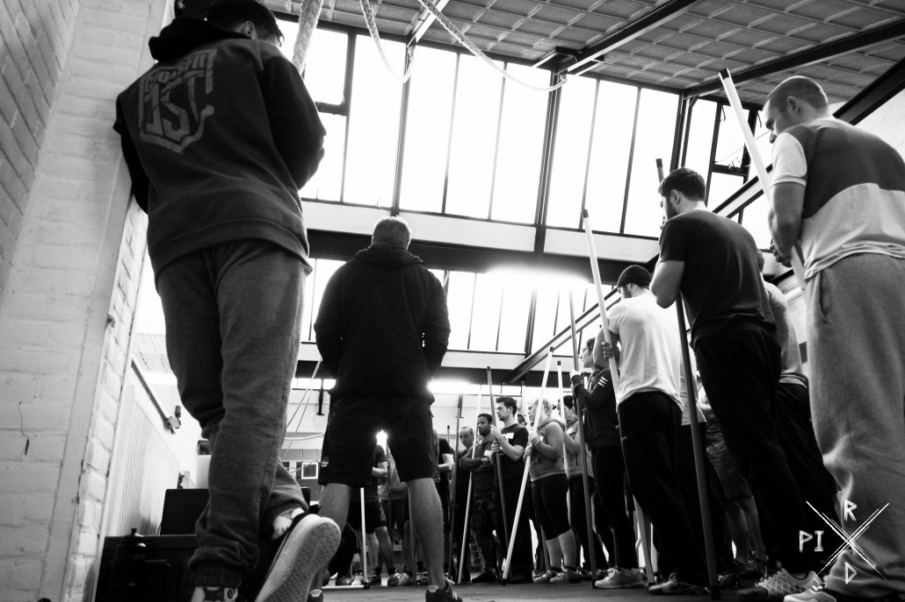

CrossFit is constantly varied functional movements performed at high intensity that lead to dramatic gains in fitness.

- All CrossFit workouts are based on functional movements that reflect the core movements of life.
- Intensity is essential for results - the more work you do in less time, the more intense the effort.
- The spontaneous community of people working out together makes it competitive and fun.
- Accurate scores & records, timers and precisely defined workouts, ensure unprecedented output and high motivation.